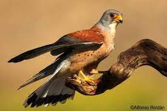
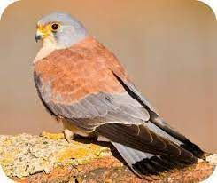
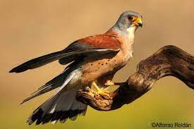
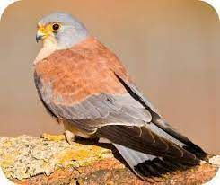

Descripción
El cernícalo primilla es una especie de ave falconiforme de la familia Falconidae que se extendía por casi la totalidad de la península ibérica, sur de Francia, sur de Italia, los Balcanes y desde el mar Caspio y Anatolia por gran parte de Asia, también se encuentra en el norte de África desde Marruecos hasta Egipto.
Hábitat
Estrechamente ligado al hombre, por norma general en terrenos abiertos, campos de cultivo, praderas, zonas húmedas, etc. Distribución: Sur y Este de Europa, África y Asia.
Estado de conservación
El cernícalo primilla es una especie migratoria. Durante la época reproductora, se distribuye por el Paleártico, por debajo de los 55º norte, desde el suroeste de Europa y el norte de África hasta Mongolia. En otoño, marcha a hibernar a las zonas estépicas de África, más al sur del Sáhara, aunque se ha descrito la invernada de una parte importante de la población en varios lugares de la península Ibérica y otras localidades del sur de Europa, sur de Ásia y noroeste de África.
Ecología
El cernícalo primilla es una especie que prefiere zonas abiertas, distribuyéndose fundamentalmente por las estepas cerealistas de la península Ibérica. Las colonias se instalan en general en construcciones humanas, aunque algunas parejas crían en cortados rocosos.
Galería de fotos
 


